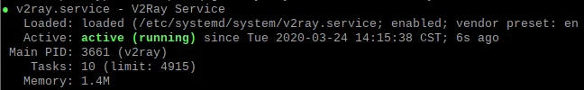

树莓派4B即目前最新款树莓派，其功能基本和一台PC机无异，但是入手一台树莓派地初衷各有差异，而我是希望它代替现有市场中大量受限的路由器，因此树莓派到手第二天，我便开始让它上岗工作，成为家庭网络中的透明网关。
坎坷历程
ss-redir
ss作为曾经的传说，至今还有大量用户在使用其服务作为fq代理实现科学上网，当然我也还保留着ss服务，同时手中有着之前的搭建教程以及有先前一直使用的虚拟机方法还稳健运行，懒惰的我便开始照猫画虎进行ss透明网关搭建。其中出现很多问题，尤其是进行IP转发、分流以及dns管理的依赖包安装过程可能会因为依赖性的版本限制产生一些麻烦，尤其是dnsmasq安装之后带来的树莓派无法上网问题，即使配置dns规则之后还是存在，但是宿主机可以正常上网。加之其他各种繁琐的问题，最终我选择放弃ss的搭建方式，耗时约莫5小时，无奈而终。
v2
v2也是去年我才开始使用，相比ss，v2的诞生就已经具备优势。而本次搭建透明网关才让我体会到v2更大的优势是其自身配置的丰富性能减少许多繁琐的依赖包处理，这也让我在短短半小时内完成树莓派上透明网关的搭建，终于开始享受局域网内的自由时光。
注意事项
- v2搭建透明网关前先作为客户端进行配置测试，见v2搭建及测试；
- 配置只改动需要修改的出口setting部分；
- Linux下开启全局代理并不能代替所有方式，涉及终端代理及浏览器代理还需自行设置，满足自身实际需求。
透明网关搭建
v2搭建及测试
安装v2
- 官方一键脚本
|
|
- 下载脚本安装，其实与第1种方法一样
|
|
- 离线安装，在网络不佳或不合适的情况下使用本地安装
在第2步中下载 go.sh 同时在v2ray-core-releases下载 v2ray-linux-arm.zip ，如果树莓派中网络不佳可以在自己的PC机下载完之后迁移文件到树莓派中。
|
|
配置v2
- 后续操作默认切换到 root 权限下，填写v2的配置json。
|
|
对上述配置中的protocol以及vnext 下的 address 、 port 、 id 、 alterId 进行修改，这是必须修改的内容，其含义可参照注释，其他内容可不改变，如果懂得配置的话可以自行修改其余内容。
- 开启v2服务
下面命令中以 # 开头为注释内容。
|
|
正常情况下，v2已经开始运行，查看状态结果如下图。

全局代理及测试
- 配置全局代理
编译安装 ProxyChains-NG 进行全局代理设置。
|
|
将proxychains.conf配置文件的最后部分内容做以下修改：
|
|
- 测试v2
通过 IP 以及 HTTP 响应码测试 v2 是否搭建成功。
|
|
透明网关搭建
V2配置透明代理的入站和DNS分流
将以下配置内容覆盖原先的v2配置内容，即修改 /etc/v2ray/config.json 下的内容。
|
|
同样的，对上述配置中的protocol以及 vnext 下的 address 、 port 、 id 、 alterId 进行修改，这是必须修改的内容，其含义可参照注释，其他内容可不改变，如果懂得配置的话可以自行修改其余内容。
配置透明代理规则
本文使用方法是tproxy，同时保证树莓派和其他客户端均能实现科学上网。
|
|
设置开机服务自启
|
|
注意事项
- 下载离线版v2时如果树莓派安装的是官方镜像系统则按照文中方法，如果自行安装了64位系统则需要下载
v2ray-linux-arm64.zip； - v2的客户端代理端口有点区别，就是socks下和HTTP下是相差一个数的，具体可自行体会；
- 配置文件中需要注意树莓派所在网段以及本地代理地址。
结束
树莓派的使用还有许多可待拓展，本文只是介绍了目前最新的将树莓派作为透明网关的配置方法。